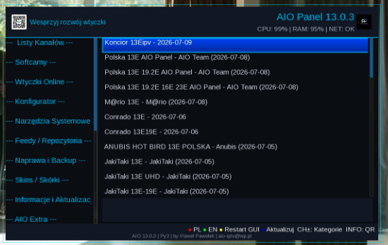

Witam na mojej stronie Paweł Pawełek
Kompletne centrum narzędzi Enigma2
AIO Panel 14.0.0
To chyba ostatnia duża aktualizacja AIO Panel. Wtyczka jest już tym, co zamierzałem osiągnąć na początku projektu — kompletnym, wygodnym i nowoczesnym centrum narzędzi dla tunerów Enigma2.

🚀 AIO Panel 14.0.0 — chyba ostatnia aktualizacja
Przez kolejne wersje AIO Panel był rozwijany, poprawiany i dostosowywany do różnych systemów oraz zgłoszeń użytkowników. Wersja 14.0.0 zamyka ten etap dużą przebudową wyglądu i uporządkowaniem całego panelu.
Dzisiaj mogę powiedzieć, że AIO Panel wygląda i działa tak, jak wyobrażałem go sobie na początku projektu.
✨ Nowy wygląd i układ
- całkowicie przebudowany, nowoczesny interfejs
- nowy układ kategorii, funkcji i informacji o wybranej pozycji
- czytelniejsze menu oraz nowe piktogramy funkcji
- przywrócone klasyczne logo AIO Panel
- uporządkowana i odświeżona struktura wtyczki
- dostosowanie do różnych rozdzielczości i popularnych obrazów Enigma2
📊 Informacje systemowe
- obciążenie procesora CPU
- wykorzystanie pamięci RAM
- zajętość pamięci flash
- wersja systemu Enigma2
- wersja używanego Pythona
- informacje sieciowe widoczne bez opuszczania panelu
🌍 Język i zgodność
Automatyczny język
- polski interfejs, gdy system Enigma2 działa w języku polskim
- angielski interfejs dla każdego innego języka systemu
- zachowane ręczne przyciski wyboru języka
Python 2 i Python 3
- zachowana zgodność z systemami Python 2 i Python 3
- funkcje mogą być filtrowane zgodnie z możliwościami systemu
- panel pozostaje dostępny na wielu starszych i nowych obrazach Enigma2
🩺 E2 Doctor w AIO Panel
Do działu z wtyczkami została dodana moja nowa wtyczka E2 Doctor — centrum diagnostyki i bezpiecznej naprawy Enigma2.
- E2 Doctor jest dostępny na systemach z Pythonem 3
- AIO Panel automatycznie rozpoznaje wersję Pythona
- instalacja E2 Doctor nie jest pokazywana na niezgodnych systemach Python 2
📡 Poprawiona kolejność list kanałów
Listy kanałów są teraz wyświetlane w bardziej logiczny i czytelny sposób:
- najnowsze listy znajdują się zawsze na samej górze
- pozostałe listy są sortowane według daty aktualizacji
- listy Azman zostały całkowicie usunięte
- Vhannibal pozostaje dostępny na samym dole listy
Dzięki temu użytkownik od razu widzi najnowsze i najczęściej aktualizowane zestawy.
🧰 Jedna wtyczka — wiele możliwości
- instalacja i aktualizacja list kanałów
- instalacja popularnych wtyczek Enigma2
- obsługa softcamów i OSCam
- instalacja piconów i dodatkowych narzędzi
- instalacja skinów i dodatków systemowych
- wykonywanie kopii zapasowych
- bezpieczne przywracanie list kanałów
- konfiguracja tunera przez Super Konfigurator
- diagnostyka sieci i systemu
- najczęstsze czynności bez wpisywania komend w terminalu
AIO Panel powstał po to, aby użytkownik Enigma2 miał najważniejsze narzędzia w jednym miejscu — dostępne bezpośrednio z pilota.
Zdjęcia / podgląd

Aktualizacja i instalacja
Aktualizacja jest dostępna bezpośrednio z poziomu AIO Panel. Po zakończeniu aktualizacji zalecany jest ręczny restart GUI Enigma2.
wget -q -O - https://raw.githubusercontent.com/OliOli2013/PanelAIO-Plugin/main/installer.sh | /bin/shPolecenie wklej w terminalu SSH, Telnet lub w konsoli dekodera.
Instalacja pobranego IPK przez FTP
Wgraj plik IPK do katalogu /tmp, a następnie wykonaj instalację w terminalu.
opkg install /tmp/enigma2-plugin-extensions-panelaio_14.0.0_all.ipkPodziękowanie
Dziękuję wszystkim, którzy testowali kolejne wersje, przesyłali zdjęcia, zgłaszali błędy i proponowali nowe rozwiązania. To właśnie dzięki Waszym uwagom AIO Panel mógł rozwijać się przez tak długi czas.
📺 AIO Panel 14.0.0
Kompletne centrum narzędzi Enigma2
by Paweł Pawełek